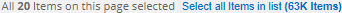
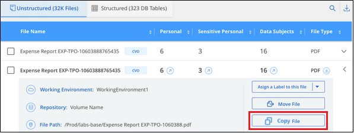

Solicitar cambios en el documento
Solicitar cambios en el documento Editar en GitHub
Editar en GitHub Guía del colaborador
Guía del colaboradorGestione sus datos privados
Colaboradores
Cloud Data Sense ofrece varias formas de gestionar sus datos privados. Algunas funcionalidades facilitan la preparación para la migración de datos, mientras que otras permiten realizar cambios en los datos.
-
Puede copiar archivos en un recurso compartido NFS de destino si desea realizar una copia de determinados datos y moverlos a una ubicación NFS diferente.
-
Es posible clonar un volumen de ONTAP en un volumen nuevo, e incluir solo los archivos seleccionados del volumen de origen en el nuevo volumen clonado. Esto resulta útil en situaciones en las que se migran datos y se desean excluir determinados archivos del volumen original.
-
Puede copiar y sincronizar archivos de un repositorio de origen a un directorio en una ubicación de destino específica. Esto resulta útil en situaciones en las que se migran datos de un sistema de origen a otro mientras todavía hay alguna actividad final en los archivos de origen.
-
Puede mover los archivos de origen que Data Sense esté analizando a cualquier recurso compartido de NFS.
-
Puede eliminar archivos que parecen poco seguros o demasiado arriesgados para dejar en el sistema de almacenamiento, o que ha identificado como duplicados.

|
|
Copiando archivos de origen
Puede copiar cualquier archivo de origen que Data Sense esté analizando. Existen tres tipos de operaciones de copia en función de lo que intente lograr:
-
Copiar archivos de los mismos volúmenes o orígenes de datos o diferentes a un recurso compartido NFS de destino.
Esto resulta útil si se desea realizar una copia de ciertos datos y moverlos a una ubicación NFS diferente.
-
Clonar un volumen ONTAP en un volumen nuevo del mismo agregado, pero incluir sólo los archivos seleccionados del volumen de origen en el nuevo volumen clonado.
Esto resulta útil en situaciones en las que se migran datos y se desean excluir determinados archivos del volumen original. Esta acción utiliza "FlexClone de NetApp" funcionalidad para duplicar rápidamente el volumen y, a continuación, eliminar los archivos que no seleccionó.
-
Copiar y sincronizar archivos desde un único repositorio de origen (volumen ONTAP, bloque S3, recurso compartido NFS, etc.) a un directorio en una ubicación de destino específica.
Esto resulta útil en situaciones en las que se migran datos de un sistema de origen a otro. Después de la copia inicial, el servicio sincroniza los datos modificados con la programación que se haya establecido. Esta acción utiliza "Cloud Sync de NetApp" funcionalidad para copiar y sincronizar datos de un origen en un destino.
Copiando archivos de origen a un recurso compartido NFS
Puede copiar archivos de origen que Data Sense esté analizando en cualquier recurso compartido de NFS. El recurso compartido NFS no necesita integrarse con Data Sense, simplemente necesita saber el nombre del recurso compartido NFS donde se copiarán todos los archivos seleccionados en el formato <host_name>:/<share_path>.

|
No se pueden copiar archivos que residen en bases de datos. |
-
Debe tener el rol de administrador de cuentas o administrador de área de trabajo para copiar archivos.
-
La copia de archivos requiere que el recurso compartido NFS de destino permita el acceso desde la instancia de Data Sense.
-
Puede copiar entre 1 y 100,000 archivos a la vez.
-
En el panel resultados de la investigación de datos, seleccione el archivo o los archivos que desea copiar y haga clic en Copiar.

-
Para seleccionar archivos individuales, marque la casilla de cada archivo (
 ).
). -
Para seleccionar todos los archivos de la página actual, active la casilla de la fila de título (
 ).
). -
Para seleccionar todos los archivos de todas las páginas, active la casilla de la fila de título (
) y, a continuación, en el mensaje emergente , Haga clic en Seleccionar todos los elementos de la lista (xxx elementos).
-
-
En el cuadro de diálogo Copy Files, seleccione la ficha copia normal.

-
Introduzca el nombre del recurso compartido NFS donde se copiarán todos los archivos seleccionados en el formato `<host_name>:/<share_path>`Y haga clic en Copiar.
Se muestra un cuadro de diálogo con el estado de la operación de copia.
Puede ver el progreso de la operación de copia en "Panel Estado de acciones".
Tenga en cuenta que también puede copiar un archivo individual al ver los detalles de metadatos de un archivo. Haga clic en Copiar archivo.

Clonar datos de volumen en un volumen nuevo
Puede clonar un volumen de ONTAP existente que detección de datos está analizando con la funcionalidad FlexClone de NetApp. Esto le permite duplicar rápidamente el volumen e incluir únicamente los archivos seleccionados. Esto resulta útil si va a migrar datos y desea excluir determinados archivos del volumen original o si desea crear una copia de un volumen para realizar las pruebas.
El nuevo volumen se creará en el mismo agregado que el volumen de origen. Asegúrese de tener suficiente espacio para este nuevo volumen en el agregado antes de iniciar esta tarea. Si es necesario, póngase en contacto con el administrador de almacenamiento.
Nota: los volúmenes FlexGroup no se pueden clonar porque FlexClone no los admite.
-
Debe tener el rol de administrador de cuentas o administrador de área de trabajo para copiar archivos.
-
Debe seleccionar un mínimo de 20 archivos.
-
Todos los archivos seleccionados deben ser del mismo volumen y el volumen debe estar en línea.
-
El volumen debe ser de un sistema ONTAP Cloud Volumes ONTAP o en las instalaciones. Actualmente no se admiten otros orígenes de datos.
-
Debe instalar la licencia de FlexClone en el clúster. Esta licencia se instala de manera predeterminada en sistemas Cloud Volumes ONTAP.
-
En el panel Investigación de datos, cree un filtro seleccionando un solo entorno de trabajo y un único repositorio de almacenamiento para asegurarse de que todos los archivos pertenecen al mismo volumen ONTAP.

Aplique otros filtros para ver solo los archivos que desea clonar en el nuevo volumen.
-
En el panel resultados de la investigación, seleccione los archivos que desea clonar y haga clic en Copiar.
-
Para seleccionar archivos individuales, marque la casilla de cada archivo (
). -
Para seleccionar todos los archivos de la página actual, active la casilla de la fila de título (
). -
Para seleccionar todos los archivos de todas las páginas, active la casilla de la fila de título (
) y, a continuación, en el mensaje emergente , Haga clic en Seleccionar todos los elementos de la lista (xxx elementos).
-
-
En el cuadro de diálogo Copy Files, seleccione la ficha FlexClone. Esta página muestra el número total de archivos que se clonarán desde el volumen (los archivos seleccionados) y el número de archivos que no se incluyen o eliminan (los archivos que no seleccionó) del volumen clonado.

-
Introduzca el nombre del nuevo volumen y haga clic en FlexClone.
Se muestra un cuadro de diálogo con el estado de la operación de clonado.
El nuevo volumen clonado se crea en el mismo agregado que el volumen de origen.
Puede ver el progreso de la operación de clonado en el "Panel Estado de acciones".
Si seleccionó inicialmente asignar todos los volúmenes o asignar y clasificar todos los volúmenes cuando habilita detección de datos para el entorno de trabajo donde reside el volumen de origen, entonces detección de datos escaneará automáticamente el nuevo volumen clonado. Si inicialmente no ha utilizado ninguna de estas selecciones, si desea explorar este nuevo volumen, deberá hacerlo "active la exploración en el volumen manualmente".
Copiar y sincronizar archivos de origen en un sistema de destino
Puede copiar archivos de origen que Data Sense esté analizando desde cualquier origen de datos no estructurados admitido a un directorio en una ubicación de destino específica ("Ubicaciones de destino compatibles con Cloud Sync"). Después de la copia inicial, los datos modificados en los archivos se sincronizan en función de la programación que configure.
Esto resulta útil en situaciones en las que se migran datos de un sistema de origen a otro. Esta acción utiliza "Cloud Sync de NetApp" funcionalidad para copiar y sincronizar datos de un origen en un destino.
|
|
No se pueden copiar y sincronizar archivos que residen en cuentas de SharePoint, cuentas de OneDrive o bases de datos. |
-
Debe tener el rol de administrador de cuentas o administrador de área de trabajo para copiar y sincronizar archivos.
-
Debe seleccionar un mínimo de 20 archivos.
-
Todos los archivos seleccionados deben ser del mismo repositorio de origen (volumen ONTAP, bloque de S3, recurso compartido NFS o CIFS, etc.).
-
Tendrá que activar el servicio Cloud Sync y configurar un mínimo de un agente de datos que se puede utilizar para transferir archivos entre los sistemas de origen y destino. Revise los requisitos de Cloud Sync que comienzan con "Descripción de Inicio rápido".
Tenga en cuenta que el servicio Cloud Sync tiene cargos por servicio independientes para sus relaciones de sincronización y incurrirá en cargos por recursos si implementa el agente de datos en el cloud.
-
En el panel Investigación de datos, cree un filtro seleccionando un solo entorno de trabajo y un único repositorio de almacenamiento para asegurarse de que todos los archivos están del mismo repositorio.
Aplique cualquier otro filtro para que sólo vea los archivos que desea copiar y sincronizar con el sistema de destino.
-
En el panel resultados de la investigación, seleccione todos los archivos de todas las páginas marcando la casilla de la fila de título (
), luego en el mensaje emergente Haga clic en Seleccionar todos los elementos de la lista (xxx elementos) y, a continuación, haga clic en Copiar.
-
En el cuadro de diálogo Copy Files, seleccione la ficha Sync.

-
Si está seguro de que desea sincronizar los archivos seleccionados con una ubicación de destino, haga clic en Aceptar.
La interfaz de usuario de Cloud Sync se abre en BlueXP.
Se le solicitará que defina la relación de sincronización. El sistema de origen se rellena previamente en función del repositorio y los archivos que ya haya seleccionado en detección de datos.
-
Deberá seleccionar el sistema de destino y, a continuación, seleccionar (o crear) el agente de datos que desea utilizar. Revise los requisitos de Cloud Sync que comienzan con "Descripción de Inicio rápido".
Los archivos se copian en el sistema de destino y se sincronizarán según la programación que defina. Si selecciona una sincronización única, los archivos se copiarán y sincronizarán una vez. Si elige una sincronización periódica, los archivos se sincronizan según la programación. Tenga en cuenta que si el sistema de origen agrega nuevos archivos que coinciden con la consulta creada mediante filtros, esos archivos new se copiarán en el destino y se sincronizarán en el futuro.
Tenga en cuenta que algunas de las operaciones habituales de Cloud Sync están deshabilitadas cuando se invoca desde Data Sense:
-
No puede utilizar los botones Eliminar archivos en origen o Eliminar archivos en destino.
-
La ejecución de un informe está deshabilitada.
Mover archivos de origen a un recurso compartido NFS
Puede mover los archivos de origen que Data Sense esté analizando a cualquier recurso compartido de NFS. El recurso compartido de NFS no necesita estar integrado con Data Sense (consulte "Analizando recursos compartidos de archivos").
De manera opcional, puede dejar un archivo de rastro en la ubicación del archivo movido. Un archivo de rastro ayuda a los usuarios a comprender por qué se trasladó un archivo desde su ubicación original. Para cada archivo movido, el sistema crea un archivo de rastro en la ubicación de origen llamada <filename>-breadcrumb-<date>.txt. Puede añadir texto al cuadro de diálogo que se añadirá al archivo de rastro para indicar la ubicación donde se trasladó el archivo y el usuario que trasladó el archivo.
Si existe un archivo con el mismo nombre en la ubicación de destino, el archivo no se moverá.
|
|
No se pueden mover los archivos que residen en las bases de datos. |
-
Debe tener el rol Administrador de cuentas o Administrador de área de trabajo para mover archivos.
-
Los archivos de origen se pueden ubicar en los siguientes orígenes de datos: ONTAP en las instalaciones, Cloud Volumes ONTAP, Azure NetApp Files, recursos compartidos de archivos y SharePoint Online.
-
Mover archivos requiere que el recurso compartido NFS permita el acceso desde la dirección IP de la instancia de Data Sense.
-
Puede mover un máximo de 15 millones de archivos al mismo tiempo.
-
En el panel resultados de la investigación de datos, seleccione el archivo o los archivos que desee mover.

-
Para seleccionar archivos individuales, marque la casilla de cada archivo (
). -
Para seleccionar todos los archivos de la página actual, active la casilla de la fila de título (
). -
Para seleccionar todos los archivos de todas las páginas, active la casilla de la fila de título (
) y, a continuación, en el mensaje emergente , Haga clic en Seleccionar todos los elementos de la lista (xxx elementos).
-
-
En la barra de botones, haga clic en mover.

-
En el cuadro de diálogo Move Files, escriba el nombre del recurso compartido NFS donde se moverán todos los archivos seleccionados en el formato
<host_name>:/<share_path>. -
Si desea dejar un archivo de rastro, marque la casilla Leave wexploración. Puede escribir texto en el cuadro de diálogo para indicar la ubicación en la que se ha movido el archivo y el usuario que lo ha movido, así como cualquier otra información, como el motivo por el que se ha movido el archivo.
-
Haga clic en mover archivos.
Tenga en cuenta que también puede mover un archivo individual al ver los detalles de los metadatos de un archivo. Simplemente haga clic en mover archivo.

Eliminando archivos de origen
Puede eliminar de forma permanente los archivos de origen que parezcan poco seguros o demasiado arriesgados para dejar su sistema de almacenamiento, o que haya identificado como duplicados. Esta acción es permanente y no hay deshacer ni restaurar.
Puede eliminar archivos manualmente desde el panel Investigación, o. "Uso automático de directivas".
|
|
No se pueden eliminar los archivos que residen en las bases de datos. |
Para eliminar archivos, es necesario contar con los siguientes permisos:
-
Para datos NFS: La política de exportación debe definirse con permisos de escritura.
-
Para datos CIFS: Las credenciales CIFS necesitan permisos de escritura.
-
Para datos S3 - el rol IAM debe incluir el siguiente permiso:
s3:DeleteObject.
Eliminación manual de archivos de origen
-
Debe tener el rol de administrador de cuentas o administrador de área de trabajo para eliminar archivos.
-
Puede eliminar un máximo de 100,000 archivos al mismo tiempo.
-
En el panel resultados de la investigación de datos, seleccione el archivo o los archivos que desea eliminar.

-
Para seleccionar archivos individuales, marque la casilla de cada archivo (
). -
Para seleccionar todos los archivos de la página actual, active la casilla de la fila de título (
). -
Para seleccionar todos los archivos de todas las páginas, active la casilla de la fila de título (
) y, a continuación, en el mensaje emergente , Haga clic en Seleccionar todos los elementos de la lista (xxx elementos).
-
-
En la barra de botones, haga clic en Eliminar.
-
Debido a que la operación de eliminación es permanente, debe escribir "permanentemente delete" en el diálogo posterior Delete File y hacer clic en Delete File.
Puede ver el progreso de la operación de eliminación en la "Panel Estado de acciones".
Tenga en cuenta que también puede eliminar un archivo individual al ver los detalles de metadatos de un archivo. Simplemente haga clic en Eliminar archivo.